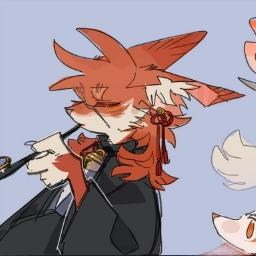

sorried.
приложения.
боты. плагины.
я Maya Moon. делаю приложения на SwiftUI, Telegram-ботов и плагины для freshGram.

Maya Moon она / еёкод и то,
что вокруг.
пишу нативные приложения для iOS и macOS. автоматизирую повседневное с помощью Telegram-ботов.
работаю со SwiftUI, делаю модули для юзерботов и плагины. сейчас изучаю Go и Rust, разбираюсь в интерфейсах.
вне кода слушаю dnb. общаюсь на русском и английском.
чем пользуюсь
- Swift
- Python
- TypeScript
- JavaScript
- Linux
- Docker
изучаю Go и Rust
библиотеки и инструменты
- приложения
- SwiftUI · FFmpeg
- боты
- Telethon · TgCrypto · grammY
- данные
- SQLite
плагины freshGram
репозиторийслучайная лиса в чате
получает случайное фото лисы и отправляет его в открытый чат.
обложки музыкальных релизов
ищет обложку по исполнителю и названию трека, затем отправляет выбранную картинку.
приложения
конвертер для macOS
локальная конвертация видео, аудио и изображений. в разработке.
почта на iOS
несколько аккаунтов, офлайн-режим и автоматическая сборка .ipa.
боты и расширения
релизы в Telegram
бот, который сообщает о новых версиях freshGram.
YouTube без Shorts
расширение скрывает Shorts и Playables. без отслеживания.